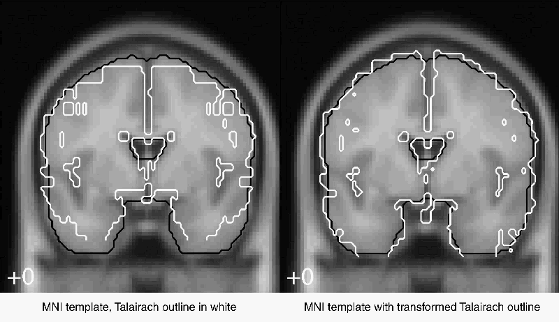

MRC Cognition and Brain Sciences
Unit, Cambridge, UK
MRC Cognition and Brain Sciences
Unit, Cambridge, UK Department of Psychology, Stanford, CA, USA
Department of Psychology, Stanford, CA, USA Biomedical Image Analysis Division, UTHSCSA, San
Antonio, TX, USA
Biomedical Image Analysis Division, UTHSCSA, San
Antonio, TX, USA
, Kalina Christoff, Rhodri Cusack, Jack Lancaster
MRC Cognition and Brain Sciences
Unit, Cambridge, UK
Department of Psychology, Stanford, CA, USA
Biomedical Image Analysis Division, UTHSCSA, San
Antonio, TX, USA
Most
studies in functional imaging present the position of activations in
terms of Brodmann cytoarchitectonic areas (BAs). The allocation of
activations to BAs often uses the Talairach 1988 atlas. This
allocation is beset by uncertainties; for example, outside primary
sensory and motor areas, we have little data on the ability of
different normalization techniques to overlay cytoarchitectonic areas
across individuals. The atlas itself presents problems; the brain
used in the atlas (the "Talairach brain" - TB) did not have
cytoarchitectonic analysis, so that the BA labels had to be estimated
by eye by comparing the TB surface with Brodmann's published data;
despite this caveat, Talairach remains the de facto standard for
estimating BAs.
The problems enumerated above require
considerable research to address. One problem that could be addressed
relatively simply is the difference between the TB and the brain
templates created by the Montreal Neurological Institute (MNI). Many
studies, including most performed using SPM software, normalize to a
template based on those of the MNI. Although these templates differ
from the TB, it is common to interpret coordinates from the MNI brain
using the Talairach atlas.
The TB was a post mortem specimen,
and has been aligned to the Talairach system, with the anterior and
posterior commisure on the same axial plane. The MNI template is
based on an average of a number of normal MRI scans, which have been
linearly aligned to a common orientation, which is similar but not
identical to that of Talairach. The MNI template represents an average
brain, and is larger than the TB. The difference in size is most
marked for the temporal lobes, where the differences are of the order
of 1cm (see left panel of figure).
|  | MNI 152 template, with untransformed (left) and transformed (right) Talairach brain outlines in white, MNI outline in black |